<table width="650">
    <tr>
    <td>

  <p class="license">
      This tutorial is from the book <a href="http://www.processing.org/learning/books/#shiffman">Learning Processing, 2nd Edition</a> by Daniel Shiffman, published by Morgan Kaufmann, &copy; 2015 Elsevier Inc. All rights reserved. If you see any errors or have comments, please <a href="https://github.com/processing/processing-docs/issues?state=open">let us know</a>.
    </p>

    <h1 style="line-height: 0.7em;">Data</h1>
    <h3 style="line-height: 0.7em;"><em>Daniel Shiffman</em></h3>


    <p>
      This tutorial picks up where the <a href="http://processing.org/learning/text/">Strings and Drawing Text</a> tutorial leaves off and examines how to use String objects as the basis for reading and writing data. We'll start by learning more sophisticated methods for manipulating Strings, searching in them, chopping them up, and joining them together.  Afterwards, we'll see how these skills allow us to use input from data sources, such as text files, web pages, xml feeds, and 3rd party APIs and take a step into the world of data visualization.
    </p>

    <h3>Manipulating Strings</h3>

    <p>
		In <a href="http://processing.org/learning/text/">Strings and Drawing Text</a>, we touched on a few of the basic functions available in the Java <tt>String</tt>, such as <tt>charAt()</tt>, <tt>toUpperCase()</tt>, <tt>equals()</tt>, and <tt>length()</tt>.  These functions are documented on the Processing reference page for Strings.  Nevertheless, in order to perform some more advanced data parsing techniques, we'll need to explore some additional String manipulation functions <a href="https://docs.oracle.com/javase/8/docs/api/java/lang/String.html">documented in the Java API</a>.
		<br /><br />
		Let's take a closer look at the following two String functions:  <tt>indexOf()</tt> and <tt>substring()</tt>.<br /><br />
		<tt>indexOf()</tt> locates a sequence of characters within a string. It takes one argument — a search string — and returns a numeric value that corresponds to the first occurrence of the search string inside of the <tt>String</tt> object being searched.<br />
<pre>
String search = "def";
String toBeSearched = "abcdefghi";
int index = toBeSearched.indexOf(search);  // The value of index in this example is 3.
</pre>

		Strings are just like arrays, in that the first character is index number zero and the last character is the length of the string minus one.  If the search string cannot be found, <tt>indexOf()</tt> returns <tt>-1</tt>.   This is a good choice because <tt>-1</tt> is not a legitimate index value in the string itself, and therefore can indicate "not found." There are no <em>negative</em> indices in a string of characters or in an array. 
	<br /><br />
		After finding a search phrase within a string, we might want to separate out part of the string, saving it in a different variable. A part of a string is known as a <em>substring</em> and substrings are made with the <tt>substring()</tt> function which takes two arguments, a start index and an end index. <tt>substring()</tt> returns the substring in between the two indices.<br /> 
		
<pre>
String alphabet = "abcdefghi";
String sub = alphabet.substring(3, 6); // The String sub is now "def".
</pre>
		Note that the substring begins at the specified <em>start index</em> (the first argument) and extends to the character at <em>end index</em> (the second argument) <em>minus one</em>. I know, I know. Wouldn’t it have been easier to just take the <em>substring</em> from the start index all the way to the end index? While this might initially seem true, it’s actually quite convenient to stop at end index minus one. For example, if you ever want to make a substring that extends to the end of a string, you can simply go all the way to <tt>thestring.length()</tt>. In addition, with end index minus one marking the end, the length of the substring is easily calculated as <em>end index minus begin index</em>.	
	</p>

<h3>Splitting and Joining Strings</h3>

	<p>
		In <a href="http://processing.org/learning/text/">Strings and Drawing Text</a>, we saw how strings can be joined together (referred to as "concatenation") using the "+" operator. Let's review with a example that uses concatenation to get user input from a keyboard.
<br /><br />
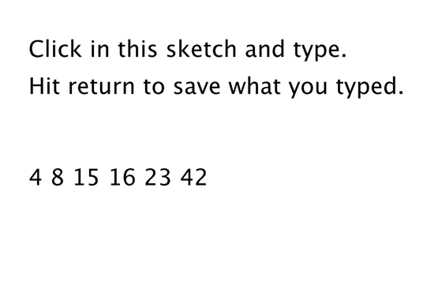	
<pre>
PFont f;
		
// Variable to store text currently being typed
String typing = "";
// Variable to store saved text when return is hit
String saved = "";
		
void setup() {  
  size(300, 200);  
  f = createFont("Arial", 16);
}
		
void draw() {  
  background(255);  
  int indent = 25;  

  // Set the font and fill for text  
  textFont(f);  
  fill(0);  

  // Display everything  
  text("Click in this sketch and type. \nHit return to save what you typed.", indent, 40);  
  text(typing, indent, 90);  
  text(saved, indent, 130);
}
		
void keyPressed() {  
  // If the return key is pressed, save the String and clear it  
  if (key == '\n') {    
    saved = typing;    
    typing = "";  
    // Otherwise, concatenate the String  
  } else {    
    typing = typing + key;   
  }
}
</pre>	
		Processing has two additional functions that make joining strings (or the reverse, splitting them up) easy. In sketches that involve parsing data from a file or the web, you might get hold of that data in the form of an array of strings or as one long string. Depending on what you want to accomplish, it’s useful to know how to switch between these two modes of storage. This is where these two new functions, <tt>split()</tt> and <tt>join()</tt>, will come in handy.
	</p>

		<strong><em>"one long string or array of strings" ←→ {"one", "long", "string", "or" ,"array", "of", "strings"}</em></strong>
		
	<p>
		Let’s take a look at the <tt>split()</tt> function. <tt>split()</tt> separates a longer string into an array of strings, based on a split character known as the <em>delimiter</em>. It takes two arguments, the <tt>String</tt> object to be split and the delimiter. (The delimiter can be a single character or a string.) In the code below, the period is not set as a delimiter and therefore will be included in the last string in the array: “dog.” Note how <tt>printArray()</tt> can be used to print the contents of an array and their corresponding indices to the message console.	<br />
<pre>
// Splitting a string based on spaces
String spaceswords = "The quick brown fox jumps over the lazy dog.";
String[] list = split(spaceswords, " ");
printArray(list);
</pre>
		Here is an example using a comma as the delimiter (this time passing in a single character: <tt>','</tt>.)	
		<br />
<pre>
// Splitting a string based on commas
String commaswords = "The,quick,brown,fox,jumps,over,the,lazy,dog.";
String[] list = split(commaswords, ",");
printArray(list);
</pre>
		If you want to use more than one delimiter to split up a text, you must use the Processing function <tt>splitTokens()</tt>. <tt>splitTokens()</tt> works identically as <tt>split()</tt> with one exception: any character that appears in the passed string qualifies as a delimiter.)	In the code below, the period is specified as a delimiter and therefore will not be included in the last string in the array: “dog”.<br />
<pre>
// Splitting a String based on multiple delimiters
String stuff = "hats & apples, cars + phones % elephants dog."; 
String[] list = splitTokens(stuff, " &,+." );
printArray(list);
</pre>
		If you are splitting numbers in a string, the resulting array can be converted into an integer array with Processing’s <tt>int()</tt> function. Numbers in a string are not numbers and cannot be used in mathematical operations unless you convert them first.<br />
<pre>
// Calculate sum of a list of numbers in a String
String numbers = "8,67,5,309";
// Converting the String array to an int array
int[] list = int(split(numbers, ','));
int sum = 0;
for (int i = 0; i&lt;list.length; i++ ) {
  sum = sum + list[i];
}
println(sum);
</pre>
		The reverse of <tt>split()</tt> is <tt>join()</tt>. <tt>join()</tt> takes an array of strings and joins them together into one long <tt>String</tt> object. The <tt>join()</tt> function also takes two arguments, the array to be joined and a <em>separator</em>. The separator can either be a single character or a string of characters.
	</p>
	
	<p>
		Consider the following array:<br />
<pre>
String[] lines = {"It", "was", "a", "dark", "and", "stormy", "night."};
</pre>
		Using the “+” operator along with a <code>for</code> loop, you can join a string together as follows:<br />
<pre>
// Manual Concatenation
String onelongstring = "";
for (int i = 0; i &lt; lines.length; i++) {
   onelongstring = onelongstring + lines[i] + " ";
}
</pre>
		The <tt>join()</tt> function, however, allows you to bypass this process, achieving the same result in only one line of code.<br />
<pre>
// Using Processing's join()
String onelongstring = join(lines, " ");
</pre>
</p>

<h3>Dealing with Data</h3>

	<p>
		Data can come from many different places: websites, news feeds, spreadsheets, databases, and so on. Let's say you've decided to make a map of the world's flowers. After searching online you might find a PDF version of a flower encyclopedia, or a spreadsheet of flower genera, or a JSON feed of flower data, or a REST API that provides geolocated lat/lon coordinates, or some web page someone put together with beautiful flower photos, and so on and so forth. The question inevitably arises: “I found all this data; which should I use, and how do I get it into Processing?”
	</p>
	
	<p>
		If you are really lucky, you might find a <a href="http://processing.org/reference/libraries/">Processing library</a> that hands data to you directly with code. Maybe the answer is to just download this library and write some code like:<br />
<pre>
import flowers.*;

void setup() {
  FlowerDatabase fdb = new FlowerDatabase();
  Flower sunflower = fdb.findFlower("sunflower");
  float h = sunflower.getAverageHeight();
}  
</pre>
		In this case, someone else has done all the work for you. They've gathered data about flowers and built a Processing library with a set of functions that hands you the data in an easy-to-understand format. This library, sadly, does not exist (not yet), but there are some that do. For example, <a href="http://www.onformative.com/lab/google-weather-library-for-processing">YahooWeather</a> is a library by Marcel Schwittlick that grabs weather data from Yahoo for you, allowing you to write code like <tt>weather.getWindSpeed()</tt> or <tt>weather.getSunrise()</tt> and more. There is still plenty of work to do in the case of using a library.
	</p>

	<p>
		Let's take another scenario. Say you’re looking to build a visualization of Major League Baseball statistics. You can't find a Processing library to give you the data but you do see everything you’re looking for at mlb.com. If the data is online and your web browser can show it, shouldn't you be able to get the data in Processing? Passing data from one application (like a web application) to another (say, your Processing sketch) is something that comes up again and again in software engineering. A means for doing this is an API or “application programming interface”: a means by which two computer programs can talk to each other. Now that you know this, you might decide to search online for “MLB API”. Unfortunately, mlb.com does not provide its data via an API. In this case you would have to load the raw source of the website itself and manually search for the data you’re looking for. While possible, this solution is much less desirable given the considerable time required to read through the HTML source as well as program algorithms for parsing it.
	</p>

	<p>
		Each means of getting data comes with its own set of challenges. The ease of using a Processing library is dependent on the existence of clear documentation and examples. But in just about all cases, if you can find your data in a format designed for a computer (spreadsheets, XML, JSON, etc.), you'll be able to save some time in the day for a nice walk outside.
	</p>

	<p>
		One other note worth a mention about working with data. When developing an application that involves a data source, such as a data visualization, it’s sometimes useful to develop with “dummy” or “fake” data. You don't want to be debugging your data retrieval process at the same time as solving problems related to algorithms for drawing. In keeping with my <em>one-step-at-a-time</em> mantra, once the meat of the program is completed with dummy data, you can then focus solely on how to retrieve the actual data from the real source. You can always use random or hard-coded numbers into your code when you’re experimenting with a visual idea and connect the real data later.</p>
		
<h3>Working with Text Files</h3>

	<p>
		Let's begin by working with the simplest means of data retrieval: reading from a text file. Text files can be used as a very simple database (you could store settings for a program, a list of high scores, numbers for a graph, etc.) or to simulate a more complex data source.
	</p>

	<p>
		In order to create a text file, you can use any simple text editor. Windows Notepad or Mac OS X TextEdit will do; just make sure you format the file as “plain text.” It is also advisable to name the text files with the “.txt” extension, to avoid any confusion. And just as with image files, these text files should be placed in the sketch’s “data” directory in order for them to be recognized by the Processing sketch.</p>
		
	<p>
		Once the text file is in place, Processing’s <tt>loadStrings()</tt> function is used to read the content of the file into a <tt>String</tt> array. The individual lines of text in the file each become an individual element in the array.
	<br /><br />
	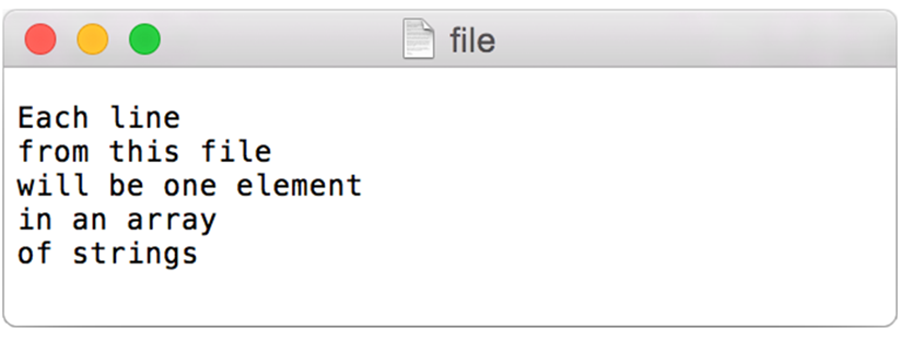
<pre>
// This code will print all the lines from the source text file.
String[] lines = loadStrings("file.txt");
println("There are " + lines.length + " lines.");
printArray(lines);
</pre>
		To run the code, create a text file called “file.txt,” type a bunch of lines in that file, and place it in your sketch’s data directory.<br /><br />Text from a file can be used to generate a simple visualization. Take the following data file.
	<br /><br />
	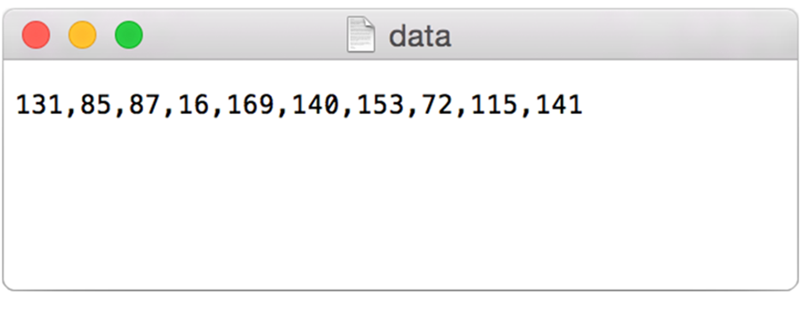<br /><br />
	
The results of visualizing this data are shown below.</p>
	
<p>
<strong>Graphing Comma-Separated Numbers from a Text File</strong>
<br /><br />
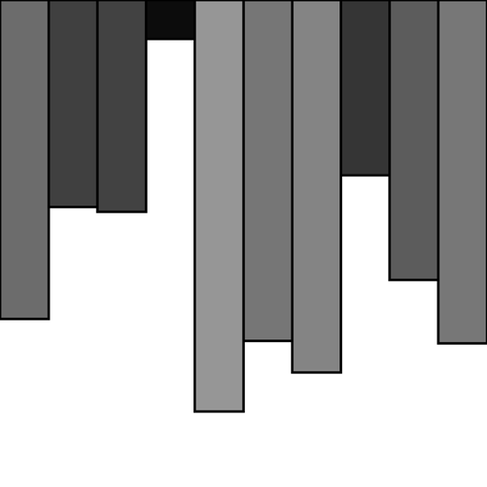
<pre>
int[] data;

void setup() {
  size(200, 200);
  // Load text file as a String
  String[] stuff = loadStrings("data.csv");
  // Convert string into an array of integers using ',' as a delimiter
  data = int(split(stuff[0], ','));
}

void draw() {
  background(255);
  stroke(0);
  for (int i = 0; i&lt;data.length; i++) { 
  	// Use array of ints to set the color and height of each rectangle.
    rect(i*20, 0, 20, data[i]);
  }
  noLoop();
}
</pre>
		Looking at how to parse a csv file with <tt>split()</tt> was a nice learning exercise. In truth, dealing with csv files (which can easily be generated from spreadsheet software such as Google docs) is such a common activity that Processing has an entire built-in class called <tt>Table</tt> to handle the parsing for you.
	</p>
	
<h3>Tabular Data</h3>

	<p>
		A table consists of data arranged as a set of rows and columns, also called “tabular data.” If you've ever used a spreadsheet, this is tabular data. Processing's <tt>loadTable()</tt> function takes comma-separated (csv) or tab-separated (tsv) values and automatically places the contents into a <tt>Table</tt> object storing the data in columns and rows. This is a great deal more convenient than struggling to manually parse large data files with <tt>split()</tt>. It works as follows. Let's say you have a data file that looks like:
	</p>
	<br />
	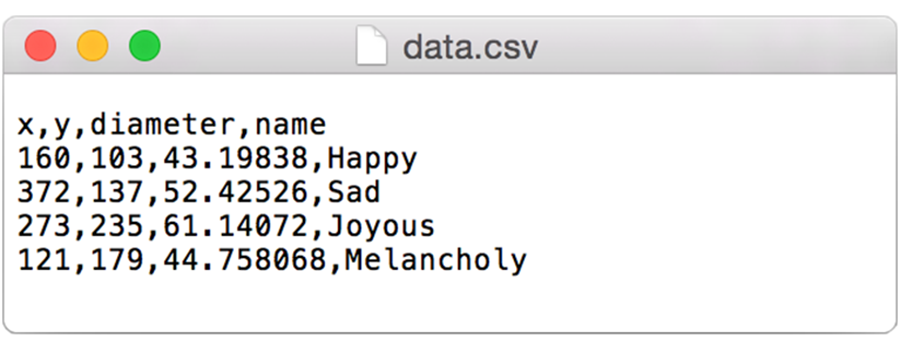
	
	<p>
		Instead of saying:<br />
<pre>
String[] stuff = loadStrings("data.csv");
</pre>
	We can now say:<br />
<pre>
Table table = loadTable("data.csv");
</pre>
		Now I've missed an important detail. Take a look again at the data.csv text file above. Notice how the first line of text is not the data itself, but rather a <em>header row</em>. This row includes labels that describe the data included in each subsequent row. The good news is that Processing can automatically interpret and store the headers for you, if you pass in the option <tt>"header"</tt> when loading the table. (In addition to <tt>"header"</tt>, there are other options you can specify. For example, if your file is called data.txt but is comma separated data you can pass in the option <tt>"csv"</tt>. If it also has a header row, then you can specifiy both options like so: <tt>"header,csv"</tt>). A full list of options can be found on the <a href="http://processing.org/reference/loadTable_.html"><tt>loadTable()</tt> documentation page</a>.<br />
<pre>
Table table = loadTable("data.csv", "header");
</pre>
		Now that the table is loaded, I can show how you grab individual pieces of data or iterate over the entire table. Let's look at the data visualized as a grid.
	<br />
	
<br />
	In the above grid you can see that the data is organized in terms of rows and columns. One way to access the data, therefore, would be to request a value by its numeric row and column location (with zero being the first row or first column). This is similar to accessing a pixel color at a given (x,y) location, though in this case the y position (row) comes first. The following code requests a piece of data at a given (row, column) location.<br />
<pre>
int val1 = table.getInt(2, 1);      // val now has the value 235

float val2 = table.getFloat(3, 2);  // val2 now has the value 44.758068

String s = table.getString(0, 3);   // s now has the value “Happy”
</pre>
	While the numeric index is sometimes useful, it’s generally going to be more convenient to access each piece of data by the column name. For example, I could pull out a specific row from the <tt>Table</tt>.<br />
<pre>
TableRow row = table.getRow(2); // Gets the third row (index 2)
</pre>
		Note in the above line of code that a <tt>Table</tt> object refers to the entire table of data while a <a href="http://processing.org/reference/TableRow.html"><tt>TableRow</tt></a> object handles an individual row of data within the <tt>Table</tt>.
	</p>

	<p>
		Once I have the <tt>TableRow</tt> object, I can ask for data from some or all of the columns.<br />
<pre>
int x = row.getInt("x"); // 	    // x has the value 273

int y = row.getInt("y");            // y has the value 235

float d = row.getFloat("diameter"); // d has the value 61.14072

String s = row.getString("name");   // s has the value “Joyous”
</pre>
		The method <a href="http://processing.org/reference/Table_getRow_.html"><tt>getRow()</tt></a> returns a single row from the table. If you want to grab all the rows and iterate over them you can do so in a loop with a counter accessing each row one at a time. The total number of available rows can be retrieved with <tt>getRowCount()</tt>.<br />
<pre>
for (int i = 0; i&lt;table.getRowCount(); i++) {

  // Access each row of the table one at a time, in a loop.
  TableRow row = table.getRow(i);
  float x = row.getFloat("x");
  float y = row.getFloat("y");
  float d = row.getFloat("diameter");
  String n = row.getString("name");

  // Do something with the data of each row

}
</pre>
		If you want to search for a select number of rows within the table, you can do so with <a href="http://processing.org/reference/Table_findRows_.html"><tt>findRows()</tt></a> and <a href="http://processing.org/reference/Table_matchRows_.html"><tt>matchRows()</tt></a>.
	</p>

	<p>
		In addition to being read, <tt>Table</tt> objects can be altered or created on the fly while a sketch is running. Cell values can be adjusted, rows can be removed, and new rows can be added. For example, to set new values in a cell there are functions <tt>setInt()</tt>, <tt>setFloat()</tt>, and <tt>setString()</tt>.<br />
<pre>
row.setInt("x", mouseX); // Update the value of column "x" to mouseX in a given TableRow.
</pre>
		To add a new row to a <tt>Table</tt>, simply call the method <a href="http://processing.org/reference/Table_addRow_.html"><tt>addRow()</tt></a> and set the values of each column.<br />
<pre>
//Create a new row.
TableRow row = table.addRow();

//Set the values of all columns in that row.
row.setFloat("x", mouseX);
row.setFloat("y", mouseY);
row.setFloat("diameter", random(40, 80));
row.setString("name", "new label");
</pre>
		To delete a row, simply call the method <a href="http://processing.org/reference/Table_removeRow_.html"><tt>removeRow()</tt></a> and pass in the numeric index of the row you would like removed. For example, the following code removes the first row whenever the size of the table is greater than ten rows.<br />
<pre>
// If the table has more than 10 rows
if (table.getRowCount()&gt;10) {

//Delete the first row (index 0).
  table.removeRow(0);
}
</pre>
		The following example puts all of the above code together. Notice how each row of the table contains the data for a <tt>Bubble</tt> object.
	</p>
	
	
<strong>Loading and Saving Tabular Data</strong>
<br />
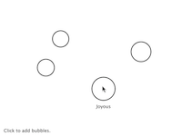
	
	
<pre>
// The data from the Table object will fill the array of Bubble objects
Table table;
Bubble[] bubbles;

void setup() {
  size(480, 360);
  loadData();
}

void draw() {
  background(255);
  // Display all bubbles
  for (int i = 0; i&lt;bubbles.length; i++) {
    bubbles[i].display();
  }
}

void loadData() {
  // "header" indicates the file has header row. The size of the array 
  // is then determined by the number of rows in the table. 
  table = loadTable("data.csv", "header");
  bubbles = new Bubble[table.getRowCount()];


  for (int i = 0; i&lt;table.getRowCount(); i++) {
    // Iterate over all the rows in a table.
    TableRow row = table.getRow(i);

	
    // Access the fields via their column name (or index).
    float x = row.getFloat("x");
    float y = row.getFloat("y");
    float d = row.getFloat("diameter");
    String n = row.getString("name");
    // Make a Bubble object out of the data from each row.
    bubbles[i] = new Bubble(x, y, d, n);
  }
}


void mousePressed() {
  // When the mouse is pressed, create a new row and set the values for each column of that row.
  TableRow row = table.addRow();
  row.setFloat("x", mouseX);
  row.setFloat("y", mouseY);
  row.setFloat("diameter", random(40, 80));
  row.setString("name", "Blah");

  // If the table has more than 10 rows, delete the oldest row.
  if (table.getRowCount()&gt;10) {
    table.removeRow(0);
  }

  // This writes the table back to the original CSV file
  // and reloads the file so that what's drawn matches.
  saveTable(table, "data/data.csv");
  loadData();
}

// This simple Bubble class draws a circle to the window 
// and displays a text label when the mouse hovers.
class Bubble {
  float x, y;
  float diameter;
  String name;
  
  boolean over = false;
  
  // Create the Bubble
  Bubble(float tempX, float tempY, float tempD, String s) {
    x = tempX;
    y = tempY;
    diameter = tempD;
    name = s;
  }
  
  // Checking if mouse is over the bubble
  void rollover(float px, float py) {
    float d = dist(px, py, x, y);
    if (d&lt;diameter/2) {
      over = true; 
    } else {
      over = false;
    }
  }
  
  // Display the Bubble
  void display() {
    stroke(0);
    strokeWeight(2);
    noFill();
    ellipse(x, y, diameter, diameter);
    if (over) {
      fill(0);
      textAlign(CENTER);
      text(name, x, y+diameter/2+20);
    }
  }
}
</pre>
	
	<p>
		Here, the distance between a given point and a circle's center is compared to that circle's radius as depicted:
	</p>
	<br />
	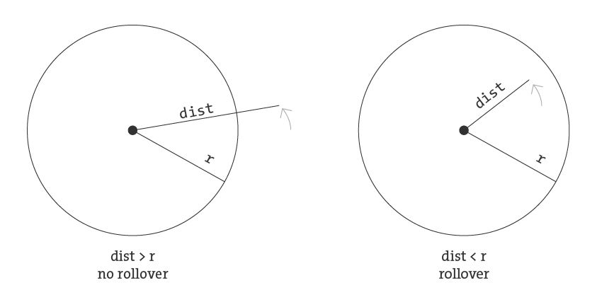
	
	<p>
		In the code below, the function returns a boolean value (true or false) depending on whether the point (mx,my) is inside the circle. Notice how radius is equal to half the diameter.
	</p>

<pre>
boolean rollover(int mx, int my) {
  if (dist(mx, my, x, y)&lt;diameter/2) {
    return true;
  } else {
    return false;
  }
}
</pre>
	
<h3>Data that is not in a Standardized Format</h3>

	<p>
		What if your data is not in a standard format like a table, how do you deal with it then? One of the nice features about <tt>loadStrings()</tt> is that in addition to pulling text from a file, you can also grab a URL. For example:<br />
<pre>
String[] lines = loadStrings("http://www.yahoo.com");
</pre>
		When you send a URL path into <tt>loadStrings()</tt>, you get back the raw HTML (Hypertext Markup Language) source of the requested web page. It’s the same stuff that appears upon selecting “View Source” from a browser’s menu options. You don’t need to be an HTML expert to follow this section, but if you are not familiar at all with HTML, you might want to read <a href="http://en.wikipedia.org/wiki/HTML">http://en.wikipedia.org/wiki/HTML</a>.
	</p>
	
	<p>
		Unlike with the comma-delimited data from a text file that was specially formatted for use in a Processing sketch, it’s not practical to have the resulting raw HTML stored in an array of strings (each element representing one line from the source). Converting the array into one long string can make things a bit simpler. As you saw earlier in the chapter, this can be achieved using <tt>join()</tt>.<br />
<pre>
String onelongstring = join(lines, " ");
</pre>
		When pulling raw HTML from a web page, it’s likely you do not want all of the source, but just a small piece of it. Perhaps you’re looking for weather information, a stock quote, or a news headline. You can take advantage of the text manipulation functions you learned — <tt>indexOf()</tt>, <tt>substring()</tt>, and <tt>length()</tt> — to find pieces of data within a large block of text. Take, for example, the following <tt>String</tt> object:<br />
<pre>
String stuff = "Number of apples:62. Boy, do I like apples or what!";
</pre>
Let’s say I want to pull out the number of apples from the above text. My algorithm would be as follows:

	<ol>
		<li>
			<p>Find the <em>end of the substring</em> “apples:” Call it start.</p>
		</li>
		<li>
			<p>Find the <em>first period</em> after “apples:” Call it end.</p>
		</li>
		<li>
			<p>Make a <em>substring</em> of the characters between start and end.</p>
		</li>
		<li>
			<p>Convert the string to a number (if I want to use it as such).</p>
		</li>
</ol></p>

	<p>
		In code, this looks like:<br />
<pre>
int start      = stuff.indexOf("apples:" ) + 7;  // STEP 1 
// The index where a string ends can be found by 
// searching for that string and adding its length (here, 8).
int end        = stuff.indexOf(".", start);      // STEP 2
String apples  = stuff.substring(start, end);    // STEP 3
int apple_no   = int(apples);                    // STEP 4
</pre>
		The above code will do the trick, but I should be a bit more careful to make sure I don’t run into any errors if I do not find the string I am searching for. I can add some error checking and generalize the code into a function:<br />
<pre>
// A function that returns a substring between two substrings. 
// If the beginning of end "tag" is not found, the function returns an empty string.
String giveMeTextBetween(String s, String startTag, String endTag) {
  // Find the index of the beginning tag
  int startIndex = s.indexOf(startTag);
  // If I don't find anything
  if (startIndex == -1) {
    return "";
  }
  // Move to the end of the beginning tag
  startIndex += startTag.length();

  // Find the index of the end tag
  int endIndex = s.indexOf(endTag, startIndex);
  
  // If I don't find the end tag,
  if (endIndex == -1) {
    return "";
  }
  // Return the text in between
  return s.substring(startIndex, endIndex);
}
</pre>
		With this technique, you are ready to connect to a website from within Processing and grab data to use in your sketches. For example, you could read the HTML source from nytimes.com and look for today’s headlines, search finance.yahoo.com for stock quotes, count how many times the word “flower” appears on your favorite blog, and so on. However, HTML is an ugly, scary place with inconsistently formatted pages that are difficult to reverse engineer and parse effectively. Not to mention the fact that companies change the source code of web pages rather often, so any example that I might make while I am writing this paragraph might break by the time you read this paragraph.
	</p>
	
	<p>
		For grabbing data from the web, an XML (Extensible Markup Language) or JSON (JavaScript Object Notation) feed will prove to be more reliable and easier to parse. Unlike HTML (which is designed to make content viewable by a human’s eyes) XML and JSON are designed to make content viewable by a computer and facilitate the sharing of data across different systems. Most data (news, weather, and more) is available this way, and I will look at examples in #beginner_xml and #JSON. Though much less desirable, manual HTML parsing is still useful for a couple reasons. First, it never hurts to practice text manipulation techniques that reinforce key programming concepts. But more importantly, sometimes there is data you really want that is not available in an API format, and the only way to get it is with such a technique. (I should also mention that regular expressions, an incredibly powerful techinque in text pattern matching, could also be employed here. As much as I love regex, it’s unfortunately beyond the scope of this tutorial.)
	</p>
	
	<p>
		An example of data only available as HTML is the <a href="http://imdb.com">Internet Movie Database</a>. IMDb contains information about movies sorted by year, genre, ratings, etc. For each movie, you can find the cast and crew list, a plot summary, running time, a movie poster image, the list goes on. However, IMDb has no API and does not provide its data as XML or JSON. Pulling the data into Processing therefore requires a bit of detective work. Let's look at the page for the <em>Shaun the Sheep Movie</em>
	</p>

	

	<p>
		Looking in the HTML source from the above URL, I find a giant mess of markup.
	</p>

	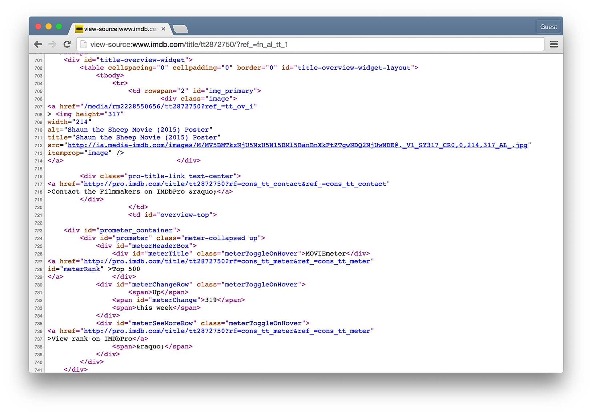

	<p>
		It’s up to me to pore through the raw source and find the data I am looking for. Let's say I want to know the running time of the movie and grab the movie poster image. After some digging, I find that the movie is 139 minutes long as listed in the following HTML.<br />
<pre>
&lt;div class="txt-block"&gt;
  &lt;h4 class="inline"&gt;Runtime:&lt;/h4&gt; 
    &lt;time itemprop="duration" datetime="PT139M"&gt;139 min&lt;/time&gt;
&lt;/div&gt;
</pre>
		For any given movie, the running time itself will be variable, but the HTML structure of the page will stay the same. I can therefore deduce that running time will always appear in between:<br />
<pre>
&lt;time itemprop="duration" datetime="PT139M"&gt;
</pre>
		and:<br />
<pre>
&lt;/time&gt;
</pre>
		Knowing where the data starts and ends, I can use <tt>giveMeTextBetween()</tt> to pull out the running time. A quote in Java marks the beginning or end of a string. So how do you include an actual quote in a String object? The answer is via an “escape” sequence. A quote can be included using a backward slash, followed by a quote. For example: String q = "This String has a quote \"in it";<br />
<pre>
String url = "http://www.imdb.com/title/tt0058331";
String[] lines = loadStrings(url);
// Get rid of the array in order to search the whole page
String html = join(lines, " ");

// Searching for running time
String start = "<time itemprop=\"duration\" datetime=\"PT139M\">"; 

String end = "</time>";
String runningtime = giveMeTextBetween(html, start, end);
println(runningtime);
</pre>
		The following code retrieves both the running time and movie poster iamge from IMDb and displays it onscreen.
	</p>
	
	<strong>Parsing IMDb Manually</strong>
	<br /><br />
	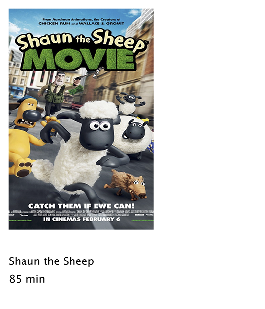
<pre>
String runningtime;
PImage poster;

void setup() {
  size(300, 350);
  loadData();
}

void draw() {
  // Display all the stuff I want to display
  background(255);
  image(poster, 10, 10, 164, 250);
  fill(0);
  text("Shaun the Sheep", 10, 300);
  text(runningtime, 10, 320);
}

void loadData() {
  String url = "http://www.imdb.com/title/tt2872750/";

  // Get the raw HTML source into an array of strings (each line is one element in the array).
  // The next step is to turn array into one long string with join().
  String[] lines = loadStrings(url);
  String html = join(lines, "");

  String start = "<time itemprop=\"duration\" datetime=\"PT139M\">";
  String end = "</time>";
  runningtime = giveMeTextBetween(html, start, end);Searching for running time.

  start = "<link rel='image_src' href=\"";
  end = "\">";
  // Search for the URL of the poster image.
  String imgUrl = giveMeTextBetween(html, start, end);
  // Now, load that image!
  poster = loadImage(imgUrl);
}

String giveMeTextBetween(String s, String before, String after) {

  // This function returns a substring between two substrings (before and after).
  //  If it can’t find anything it returns an empty string.
  String found = "";

  // Find the index of before
  int start = s.indexOf(before);     
  if (start == -1) {
    return "";                       
  }    

  // Move to the end of the beginning tag
  // and find the index of the "after" String      
  start += before.length();    
  int end = s.indexOf(after, start); 
  if (end == -1) {
    return "";                       
  }

  // Return the text in between
  return s.substring(start, end); 
}
</pre>

<h3>Text Analysis</h3>

	<p>
		Loading text from a URL need not only be an exercise in parsing out small bits of information. It’s possible with Processing to analyze large amounts of text found on the web from news feeds, articles, and speeches, to entire books. A nice source is <a href="http://www.gutenberg.org/"><em>Project Gutenberg</em></a> which makes available thousands of public domain texts. Algorithms for analyzing text merits an entire book itself, but let’s look at some basic techniques.
	</p>
	
	<p>
		A text concordance is an alphabetical list of words that appear in a book or body of text along with contextual information. A sophisticated concordance might keep a list of where each word appears (like an index) as well as which words appear next to which other words. In this case, I'm going to create a simple concordance, one that simply stores a list of words and their corresponding counts, i.e., how many times they appeared in the text. Concordances can be used for text analysis applications such as spam filtering or sentiment analysis. To accomplish this task, I am going to use the Processing built-in class <tt>IntDict</tt>.
	</p>
	
	<p>
		As you learned earlier, an array is an ordered list of variables. Each element of the array is numbered and be accessed by its numeric index.
	</p>
	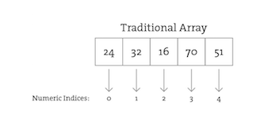
	<p>
		However, what if instead of numbering the elements of an array you could name them? This element is named “Sue,” this one “Bob,” this one “Jane,” and so on and so forth. In programming, this kind of data structure is often referred to as an <em>associative array, map,</em> or <em>dictionary.</em> It’s a collection of (key, value) pairs. Imagine you had a dictionary of people's ages. When you look up “Sue” (the key), the definition, or value, is her age, 24.
	</p>
	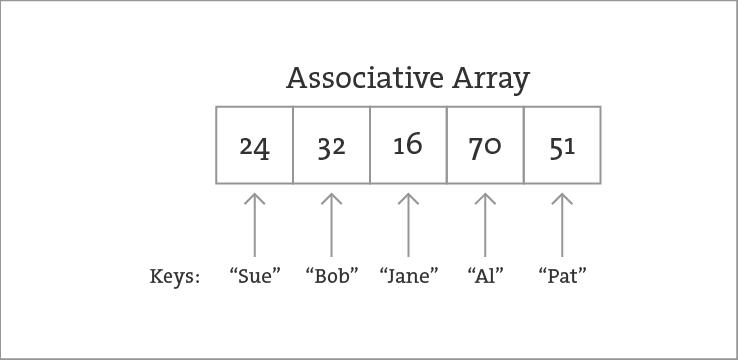
	<p>
		Associative arrays can be incredibly convenient for various applications. For example, you could keep a list of student IDs (student name, id) or a list of prices (product name, price) in a dictionary. Here a dictionary is the perfect data structure to hold the concordance. Each element of the dictionary is a word paired with its count.
	</p>
	
	<p>
		While there are many classes in Java for dealing with advanced data structures like maps, Processing provides you with a set of three built-in dictionary classes that are easy to use: <tt>IntDict</tt>, <tt>FloatDict</tt>, and <tt>StringDict</tt>. In all of these classes, the key is always a string while the value is variable (an integer, floating point number, or String). For the concordance, I'll use an <tt>IntDict</tt>.
	</p>
	
	<p>
		Creating an <tt>IntDict</tt> is as easy as calling an empty constructor. Let's say you want a dictionary to keep track of an inventory of supplies.<br />
<pre>
IntDict inventory = new IntDict();
</pre>
		Values can be paired with their keys using the <tt>set()</tt> method.<br />
<pre>
// set() assigns an integer to a String.
inventory.set("pencils", 10);
inventory.set("paper clips", 128);
inventory.set("pens, 16");
</pre>
		There are a variety of other methods that can be called to change the value associated with a particular key. For example, if you wanted to add five pencils, you can use <tt>add()</tt>.<br />
<pre>
inventory.add("pencils", 5);	// The value of “pencils” is now 15.
</pre>

		A particularly convenient method for the concordance example is <tt>increment()</tt> which adds one to a key's value.<br />
<pre>
inventory.increment("pens");	// The value of “pencils” is now 16.
</pre>
		To retrieve a value associated with a particular key, the <tt>get()</tt> method is used.<br />
<pre>
int num = inventory.get("pencils"); 	// The value of num is 16.
</pre>
		Finally, dictionaries can be sorted by their keys (alphabetical) or values (smallest to largest or the reverse) with the methods <tt>sortKeys()</tt>, <tt>sortKeysReverse()</tt>, <tt>sortValues()</tt>, and <tt>sortValuesReverse()</tt>.
	</p>
	
	<p>
		The concordance now becomes a rather simple program to write. All I need to do is load in a text file, chop it into words with <tt>splitTokens()</tt> and call <tt>increment()</tt> on an <tt>IntDict</tt> for every single word found in the text. The following example does precisely this with the entire text of Shakespeare’s play, <em>A Midsummer Night's Dream</em>, displaying a simple graph of the most used words.
	</p>
	
<strong>Text Concordance Using IntDict</strong>
<br /><br />
	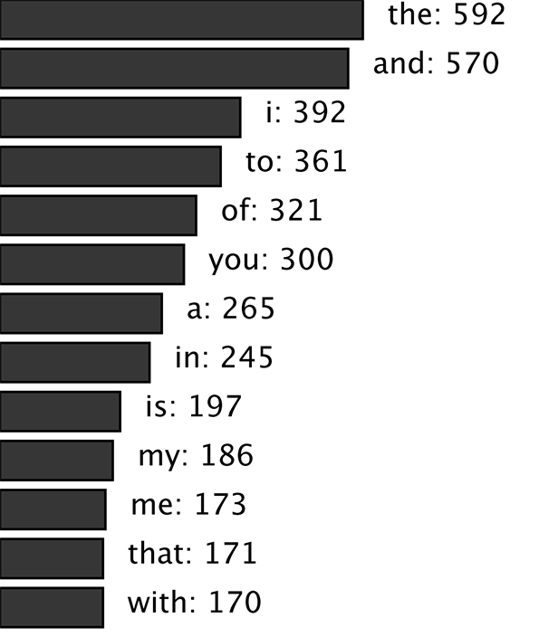
<pre>
String[] allwords;

// Any punctuation is used as a delimiter.
String delimiters = " ,.?!;:[]";

IntDict concordance;

void setup() {
  size(360, 640);

  // Load A Midsummer Night's Dream into an array of strings
  String url = "http://www.gutenberg.org/cache/epub/1514/pg1514.txt";
  String[] rawtext = loadStrings(url);

  // Join the big array together as one long string
  String everything = join(rawtext, "" );

  // All the lines in A Midsummer Night's Dream are first joined as one big string
  // and then split up into an array of individual words.
  // Note the use of splitTokens() since I am using spaces and punctuation marks as delimiters.
  allwords = splitTokens(everything, delimiters);  


  // Make a new empty dictionary
  concordance = new IntDict();

  for (int i = 0; i&lt;allwords.length; i++) {
    // It's useful to convert each word to lower case so that,
    // for example, “The” and “the” are both counted as the same word.
    String s = allwords[i].toLowerCase();
    // For every single word, increase its count in the dictionary.
    concordance.increment(s);
  }
  
  // Sort the dictionary so that words that appear most often are first.
  concordance.sortValuesReverse();
}

void draw() {
  background(255);

  // Display the text and total times the word appears
  int h = 20;
  // In order to iterate over every word in the dictionary,
  // first ask for an array of all of the keys.
  String[] keys = concordance.keyArray();

  for (int i = 0; i&lt;height/h; i++) {
    // Look at each key one at a time and retrieve its count.
    String word = keys[i]; 
    int count = concordance.get(word);

    fill(51);
    // Displaying a rectangle along with the count as a simple graph.
    rect(0, i*20, count/4, h-4);
    fill(0);
    text(word + ": " + count, 10+count/4, i*h+h/2);
    stroke(0);
  }
}
</pre>
	  <p>
	  	Processing also includes three classes for lists of numbers and strings: <tt>IntList</tt>, <tt>FloatList</tt>, and <tt>StringList</tt>. In other words, if you just want a list of words (without their counts) you could use a <tt>StringList</tt> rather than an <tt>IntDict.</tt>
	  </p>
	  
	  <p>
	  	If your data is available via a standardized format such as XML or JSON, the process of manually searching through text for individual pieces of data is no longer required. XML is designed to facilitate the sharing of data across different systems, and you can retrieve that data using the built-in Processing XML class.
	  </p>
	  
	  <p>
	  	XML organizes information in a tree structure. Let’s imagine a list of students. Each student has an ID number, name, address, email, and telephone number. Each student’s address has a city, state, and zip code. An XML tree for this dataset might look like the following:
	  </p>
	  
	  <p>
	  	The XMl source itself (with two students listed) is:<br />
<pre>
&lt;?xml version = "1.0" encoding = "UTF-8 "?&gt;
&lt;students&gt;
  &lt;student&gt;
    &lt;id&gt;001&lt;/id&gt;
    &lt;name&gt;Daniel Shiffman&lt;/name&gt;
    &lt;phone&gt;555-555-5555&lt;/phone&gt;
    &lt;email&gt;daniel@shiffman.net&lt;/email&gt;
    &lt;address&gt;
      &lt;street&gt;123 Processing Way&lt;/street&gt;
      &lt;city&gt;Loops&lt;/city&gt;
      &lt;state&gt;New York&lt;/state&gt;
      &lt;zip&gt;01234&lt;/zip&gt;
    &lt;/address&gt;
  &lt;/student&gt;
  &lt;student&gt;
    &lt;id&gt;002&lt;/id&gt;
    &lt;name&gt;Zoog&lt;/name&gt;
    &lt;phone&gt;555-555-5555&lt;/phone&gt;
    &lt;email&gt;zoog@planetzoron.uni&lt;/email&gt;
    &lt;address&gt;
      &lt;street&gt;45.3 Nebula 5&lt;/street&gt;
      &lt;city&gt;Boolean City&lt;/city&gt;
      &lt;state&gt;Booles&lt;/state&gt;
      &lt;zip&gt;12358&lt;/zip&gt;
    &lt;/address&gt;
  &lt;/student&gt;
&lt;/students&gt;
</pre>
	  	Note the similarities to object-oriented programming. You can think of the XML tree in the following terms. The XML document represents an array of student objects. Each student object has multiple pieces of information, an ID, a name, a phone number, an email address, and a mailing address. The mailing address is also an object that has multiple pieces of data, such as street, city, state, and zip.
	  </p>
	  
	  <p>
	  	Let's look at some data made available from a web service such as Yahoo Weather. Here is the raw XML source. (Note I have edited it slightly for simplification purposes.)<br />
<pre>
&lt;?xml version="1.0" encoding="UTF-8" standalone="yes" ?&gt;
&lt;rss version="2.0" xmlns:yweather="http://xml.weather.yahoo.com/ns/rss/1.0"&gt;
  &lt;channel&gt;
    &lt;item&gt;
      &lt;title&gt;Conditions for New York, NY at 12:49 pm EDT&lt;/title&gt;
      &lt;geo:lat&gt;40.67&lt;/geo:lat&gt;
      &lt;geo:long&gt;-73.94&lt;/geo:long&gt;
      &lt;link&gt;http://us.rd.yahoo.com/dailynews/rss/weather/New_York__NY//link&gt;
      &lt;pubDate&gt;Thu, 24 Jul 2014 12:49 pm EDT&lt;/pubDate&gt;
      &lt;yweather:condition text="Partly Cloudy" code="30" temp="76"/&gt;
      &lt;yweather:forecast day="Thu" low="65" high="82" text="Partly Cloudy"/&gt;
    &lt;/item&gt;
  &lt;/channel&gt;
&lt;/rss&gt;
</pre>
		The data is mapped in the tree stucture shown below:
	</p>
	
	<p>
		You may be wondering what the top level “RSS” is all about. Yahoo’s XML weather data is provided in RSS format. RSS stands for “Really Simple Syndication” and is a standardized XML format for syndicating web content (such as news articles, etc.). You can read more about <a href="http://en.wikipedia.org/wiki/RSS">RSS on Wikipedia</a>.
	</p>
	
	<p>Now that you have a handle on the tree structure, let's look at the specifics inside that structure. With the exception of the first line (which simply indicates that this page is XML formatted), this XML document contains a nested list of <em>elements</em>, each with a start tag, that is, <tt>&lt;channel&gt;</tt>, and an end tag, that is, <tt>&lt;/channel&gt;</tt>. Some of these elements have content between the tags:<br />
<pre>
&lt;title&gt;Conditions for New York, NY at 12:49 pm EDT&lt;/title&gt;
</pre>
and some have attributes (formatted by <em>Attribute Name</em> equals <em>Attribute Value in quotes</em>):<br />
<pre>
&lt;yweather:forecast day="Thu" low="65" high="82" text="Partly Cloudy"/&gt;
</pre>
</p>

<h3>Using the Processing XML Class</h3>

	<p>
		Since the syntax of XML is standardized, I could certainly use <tt>split()</tt>, <tt>indexof()</tt>, and <tt>substring()</tt> to find the pieces I want in the XML source. The point here, however, is that because XML is a standard format, I don't have to do this. Rather, I can use an XML parser. In Processing, XML can be parsed using the built-in Processing class <tt>XML</tt>.<br />
<pre>
XML xml = loadXML("http://xml.weather.yahoo.com/forecastrss?p=10003");
</pre>
		Here, instead of <tt>loadStrings()</tt> or <tt>loadTable()</tt>, I'm now calling <tt>loadXML()</tt> and passing in the address (URL or local file) of the XML document. An <tt>XML</tt> object represents one element of an XML tree. When a document is first loaded, that <tt>XML</tt> object is always the root element. Referring back to XML tree diagram from Yahoo Weather, I find the current temperature via the following path:
	</p>

	<ol>
		<li>
			<p>The root of the tree is <strong>RSS</strong>.</p>
		</li>
		<li>
			<p><strong>RSS</strong> has a child named <strong>channel</strong>.</p>
		</li>
		<li>
			<p><strong>Channel</strong> has a child named <strong>item</strong>.</p>
		</li>
		<li>
			<p><strong>Item</strong> has a child named <strong>yweather:condition</strong>.</p>
		</li>
		<li>
			<p>The temperature is stored in <strong>yweather:condition</strong> as the attribute <strong>temp</strong>.</p>
		</li>
	</ol>
	
	<p>
		The children of an element are accessed via the <tt>getChild()</tt> function.<br />
<pre>
// Accessing the “channel” child element of the root element --&gt;
XML channel = xml.getChild("channel");
</pre>
		The content of an element itself is retrieved with one of the following methods: <tt>getContent()</tt>, <tt>getIntContent()</tt>, or <tt>getFloatcContent()</tt>. <tt>getContent()</tt> is for generic use and will always give you the content as a String. If you intend to use the content as a number, Processing will convert it for you with either <tt>getIntContent()</tt> or <tt>getFloatcContent()</tt>. Attributes can also be read as either numbers — <tt>getInt(), getFloat()</tt> — or text — <tt>getString()</tt>.
	</p>

	<p>
		Following steps one through five outlined above through the XML tree, I have:<br />
<pre>
XML root = loadXML("http://xml.weather.yahoo.com/forecastrss?p=10003"); // Step 1

XML channel     = root.getChild("channel"); // Step 2

XML item        = channel.getChild("item"); // Step 3

XML yweather    = item.getChild("yweather:condition"); // Step 4

int temperature = yweather.getInt("temp"); // Step 5
</pre>
		However, this is a bit long-winded and so can be compressed down into one (or three, as below) lines of code.<br />
<pre>
XML root = loadXML(http://xml.weather.yahoo.com/forecastrss?p=10003);

XML forecast = 
  root.getChild("channel").getChild("item").getChild("yweather:condition"); // Steps 2-4
int temperature = forecast.getInt("temp");
</pre>
		Finally, the second line of code above can be further condensed to:<br />
<pre>
XML forecast = xml.getChild("channel/item/yweather:condition"); // Steps 2-4
</pre>
		Following is the above code put together in an example that retrieves weather data for multiple zip codes by parsing Yahoo's XML feed.
	</p>
<p>
<strong>Parsing Yahoo Weather XML</strong>

<pre>
int temperature = 0;Temperature is stored as a number and the description of the weather as a string. 
String weather = "";


// The zip code
String zip = "10003";

void setup() {
  size(200, 200);

  // The URL for the XML document
  String url = "http://xml.weather.yahoo.com/forecastrss?p=" + zip;

  // Load the XML document
  XML xml = loadXML(url);

  // Here, I grab the XML element that I want. 
  XML forecast = xml.getChild("channel/item/yweather:forecast");

  // And then I pull the attributes from that XML element.
  temperature = forecast.getInt("high"); 
  weather = forecast.getString("text");
}

void draw() {
  background(255);
  fill(0);

  // Display all the stuff I want to display
  text("Zip code: " + zip, 10, 50);
  text("Today’s high: " + temperature, 10, 70);
  text("Forecast: " + weather, 10, 90);
}
</pre>
		Other useful XML functions are:
	</p>
	
<ul>
	<li>
	<p><tt>hasChildren()</tt> — checks whether or not an element has any children</p>
	</li>
	<li>
	<p><tt>getChildren()</tt> — returns an array containing all child elements</p>
	</li>
	<li>
	<p><tt>getAttributeCount()</tt> — counts the specified element's number of attributes</p>
	</li>
	<li>
	<p><tt>hasAttribute()</tt> — checks whether or not an element has the specified attribute</p>
	</li>
</ul>


	<p>
		In this example I'm accessing the child nodes by their name (i.e., "channel," "item,", etc.), however they can also be accessed numerically via an index (starting at zero, same as an array). This is convenient when looping over a list of children, much like I did with tabular data when I iterated over rows in a table.
	</p>
	
	<p>
		Earlier, we used a <tt>Table</tt> to store information related to <tt>Bubble</tt> objects. XML document can also be used in the same manner. Here is a possible solution for an XML tree of <tt>Bubble</tt> objects:<br />
<pre>
&lt;?xml version="1.0" encoding="UTF-8"?&gt;
&lt;bubbles&gt;
  &lt;bubble&gt;
    &lt;position x="160" y="103"/&gt;
    &lt;diameter&gt;43.19838&lt;/diameter&gt;
    &lt;label&gt;Happy&lt;/label&gt;
  &lt;/bubble&gt;
  &lt;bubble&gt;
    &lt;position x="372" y="137"/&gt;
    &lt;diameter&gt;52.42526&lt;/diameter&gt;
    &lt;label&gt;Sad&lt;/label&gt;
  &lt;/bubble&gt;
  &lt;bubble&gt;
    &lt;position x="273" y="235"/&gt;
    &lt;diameter&gt;61.14072&lt;/diameter&gt;
    &lt;label&gt;Joyous&lt;/label&gt;
  &lt;/bubble&gt;
  &lt;bubble&gt;
    &lt;position x="121" y="179"/&gt;
    &lt;diameter&gt;44.758068&lt;/diameter&gt;
    &lt;label&gt;Melancholy&lt;/label&gt;
  &lt;/bubble&gt;
&lt;/bubbles&gt;
</pre>
		I can use <tt>getChildren()</tt> to retrieve the array of <tt>&lt;bubble&gt;</tt> elements and make a <tt>Bubble</tt> object from each one. Here is the example which uses the identical <tt>Bubble</tt> class from earlier (not included below). The new code is in bold.
	</p>
	
<p>
<strong>Using Processing's XML Class</strong>

<pre>
// An Array of Bubble objects
Bubble[] bubbles;
// An XML object
<strong>XML xml;</strong>

void setup() {
  size(480, 360);
  loadData();
}

void loadData() {
  <strong>// Load XML file</strong>
  <strong>xml = loadXML("data.xml");</strong>
  <strong>// Get all the child nodes named "bubble"</strong>
  <strong>XML[] children = xml.getChildren("bubble");</strong>

  <strong>bubbles = new Bubble[children.length];
  // The size of the <code>Bubble</code> array is determined by the total XML elements named “bubble.”</strong>

  <strong>for (int i = 0; i &lt; bubbles.length; i++) {</strong>
    
    <strong>XML positionElement = children[i].getChild("position");</strong>
	// The position element has two attributes: “x” and “y”.
	// Attributes can be accessed as an integer or float via <code>getInt()</code> and <code>getFloat()</code>.
    <strong>float x = positionElement.getInt("x");</strong>
    <strong>float y = positionElement.getInt("y");</strong>
	
    <strong>// The diameter is the content of the child named "diameter"</strong>
    <strong>XML diameterElement = children[i].getChild("diameter");</strong>
    <strong>float diameter = diameterElement.getFloatContent();</strong>
    // Notice, however, with the content of an XML node, 
	// I retrieve via getIntContent() and getFloatContent().

    <strong>// The label is the content of the child named "label"</strong>
    <strong>XML labelElement = children[i].getChild("label");</strong>
    <strong>String label = labelElement.getContent();</strong>

    // Make a Bubble object out of the data read
    bubbles[i] = new Bubble(x, y, diameter, label);
  }  
}

void draw() {
  background(255);
  // Display all bubbles
  for (int i = 0; i &lt; bubbles.length; i++) {
    bubbles[i].display();
    bubbles[i].rollover(mouseX, mouseY);
  }
}
</pre>
		In addition to <tt>loadXML()</tt>, Processing also includes a <tt>saveXML()</tt> function for writing XML files to your sketch folder. You can modify the XML tree itself by adding or removing elements with <tt>addChild()</tt> or <tt>removeChild()</tt>, as well as modify the content of elements or attributes with <tt>setContent()</tt>, <tt>setIntContent()</tt>, <tt>setFloatContent()</tt>, <tt>setString()</tt>, <tt>setInt()</tt>, and <tt>setFloat()</tt>.
	</p>
	
<h3>JSON</h3>
	
	<p>
		Another increasingly popular data exchange format is JSON (pronounced like the name Jason), which stands for JavaScript Object Notation. Its design was based on the syntax for objects in the JavaScript programming language (and is most commonly used to pass data between web applications) but has become rather ubiquitous and language-agnostic. While you don't need to know anything about JavaScript to work in Processing, it won't hurt to get a sense of some basic JavaScript syntax while learning it.
	</p>
	
	<p>
		JSON is an alternative to XML and the data can be looked at in a similarly tree-like manner. All JSON data comes in the following two ways: an object or an array. Luckily, you already know about these two concepts and only need to learn a new syntax for encoding them.
	</p>

	<p>
		Let's take a look at a JSON object first. A JSON object is like a Processing object only with no functions. It’s simply a collection of variables with a name and a value (or "name/value pair"). For example, following is JSON data describing a person:<br />
<pre>
{
  "name":"Olympia",
  // Each name/value pair is separated by a comma.
  "age":3,
  "height":96.5,
  "state":"giggling"
}</pre>
Notice how this maps closely to classes in Processing.
<pre data-type="programlisting">
class Person {
  String name;
  int age;
  float height;
  String state;
}
</pre>
		There are no classes in JSON, only the object literals themselves. Also an object can contain, as part of itself, another object.<br />
<pre>
{
  "name":"Olympia",
  "age":3,
  "height":96.5,
  "state":"giggling",
  // The value of “brother” is an object containing two name/value pairs.
  "brother":{
    "name":"Elias",
    "age":6
  }
}</pre>
		In XML, the preceding JSON data would look like the following (for simplicity I'm avoiding the use of XML attributes).<br />
<pre>
&lt;xml version="1.0" encoding="UTF-8"?&gt;
&lt;person&gt;
  &lt;name&gt;Olympia&lt;/name&gt;
  &lt;age&gt;3&lt;/age&gt;
  &lt;height&gt;96.5&lt;/height&gt;
  &lt;state&gt;giggling&lt;/state&gt;
  &lt;brother&gt;
    &lt;name&gt;Elias&lt;/name&gt;
    &lt;age&gt;6&lt;/age&gt;
  &lt;/brother&gt;
&lt;/person&gt;
</pre>
		Multiple JSON objects can appear in the data as an array. Just like the arrays you use in Processing, a JSON array is simply a list of values (primitives or objects). The syntax, however, is different with square brackets indicating the use of an array rather than curly ones. Here is a simple JSON array of integers:<br />
<pre>
[1, 7, 8, 9, 10, 13, 15]
</pre>
		You might find an array as part of an object.<br />
<pre>
{
  "name":"Olympia",
  // The value of “favorite colors” is an array of strings.
  "favorite colors":[
    "purple",
    "blue",
    "pink"
  ]
}
</pre>
		Or an array of objects themselves. For example, here is what the bubbles would look like in JSON. Notice how this JSON data is organized as a single JSON object "bubbles," which contains a JSON array of JSON objects, the bubbles. Flip back to compare to the CSV and XML versions of the same data.<br />
<pre>
{
  "bubbles":[
    {
      "position":{
        "x":160,
        "y":103
      },
      "diameter":43.19838,
      "label":"Happy"
    },
    {
      "position":{
        "x":372,
        "y":137
      },
      "diameter":52.42526,
      "label":"Sad"
    },
    {
      "position":{
        "x":273,
        "y":235
      },
      "diameter":61.14072,
      "label":"Joyous"
    }
  ]
}
</pre></p>

<h3>JSONObject and JSONArray</h3>

	<p>
		Now that I've covered the syntax of JSON, I can look at using the data in Processing. One thing that can be a bit tricky about working with JSON in Processing is that I have to treat objects and arrays differently. With XML, I simply had a single XML class with all the parsing functionality I needed. With JSON, I have two classes: JSONObject and JSONArray, and I'll have to be conscientious about picking which class I am using during the parsing process.
	</p>
	
	<p>
		The first step is simply loading the data with either <tt>loadJSONObject()</tt> or <tt>loadJSONArray()</tt>. But which one? I have to look and see what is at the root of the JSON file, an object or array. This can be a little tricky. Let's look at these two JSON examples:
	</p>
	
	<p>
		Sample 1:<br />
<pre>
[
  {
    "name":"Elias"
  },
  {
    "name":"Olympia"
  }
]
</pre>
		Sample 2:<br />
<pre>
{
  "names":[
    {
      "name":"Elias"
    },
    {
      "name":"Olympia"
    }
  ]
}
</pre>
		Look how similar the above two samples look. They both contain exactly the same data, two names "Elias" and "Olympia." There is one, very key difference, however, to how the data is formatted: the very first character. Is it a "[" or a "{"? The answer will determine whether you’re loading an array ("[") or an object("{"). JSON objects start with a curly bracket, while JSON arrays start with a square bracket.<br />
<pre>
JSONObject json = loadJSONObject("file.json");

JSONArray json = JSONArray("file.json");
</pre>
		Typically, even if the data is ultimately organized as an array of objects (such as the array of "bubble" objects), the root element of the JSON data will be an object that contains that array. Let's look at the bubble data one more time.<br />
<pre>
{
  "bubbles":[
    {
      "position":{
        "x":160,
        "y":103
      },
      "diameter":43.19838,
      "label":"Happy"
    },
    {
      "position":{
        "x":372,
        "y":137
      },
      "diameter":52.42526,
      "label":"Sad"
    }
  ]
}
</pre>
		With the above, I first load an object and then pull the array out of that object.<br />
<pre>
JSONObject json = loadJSONObject("data.json");
JSONArray bubbleData = json.getJSONArray("bubbles");
</pre>
		Just as with XML, the data from an element is accessed via its name, in this case "bubbles." With a <tt>JSONArray</tt>, however, each element of the array is retrieved via its numeric index. The following code iterates over a <tt>JSONArray</tt>.<br />
<pre>
for (int i = 0; i &lt; bubbleData.size(); i++) {
  JSONObject bubble = bubbleData.getJSONObject(i);
 }
</pre>
		And when you're looking for a specific piece of data from a <code>JSONObject</code>, such as an integer or string, the functions are identical to those of XML attributes. The following code gets the position object from the bubble object, then gets x and y as integers from the position object. The diameter and label are then available directly from the <tt>Bubble</tt> object.<br />
<pre>
  JSONObject position = bubble.getJSONObject("position");


  int x = position.getInt("x");
  int y = position.getInt("y");

  float diameter = bubble.getFloat("diameter");
  String label = bubble.getString("label");
</pre>
		Putting this all together, I can now make a JSON version of the bubbles example (leaving out the <tt>draw()</tt> function and <tt>Bubble</tt> class which haven't changed.)
	</p>
	
<p>
<strong>Using Processing's JSON Classes</strong>
<br />
<pre>
// An Array of Bubble objects
Bubble[] bubbles;

void setup() {
  size(480, 360);
  loadData();
}

void loadData() {
  // Load the JSON file and grab the array.
  JSONObject json = loadJSONObject("data.json");
  JSONArray bubbleData = json.getJSONArray("bubbles");

  // The size of the array of Bubble objects is determined by the length of the JSON array.
  bubbles = new Bubble[bubbleData.size()]; 


  for (int i = 0; i&lt;bubbleData.size(); i++) {

    // Iterate through the array, grabbing each JSON object one at a time.
    JSONObject bubble = bubbleData.getJSONObject(i);

    // Get a position object
    JSONObject position = bubble.getJSONObject("position");
    // Get (x,y) from JSON object "position"
    int x = position.getInt("x");
    int y = position.getInt("y");
    
    // Get diamter and label
    float diameter = bubble.getFloat("diameter");
    String label = bubble.getString("label");

    // Put the Bubble objects into an array.
    bubbles[i] = new Bubble(x, y, diameter, label);
  }
}
</pre></p>

<h3>Threads</h3>

	<p>
		As you have seen, the various loading functions — <tt>loadStrings()</tt>, <tt>loadTable()</tt>, <tt>loadXML()</tt>, and <tt>loadJSONObject()</tt> — can be used for retrieving data from URLs. Nonetheless, unless your sketch only needs to load the data once during <tt>setup()</tt>, you may have a problem. For example, consider a sketch that grabs the price of AAPL stock from an XML feed every five minutes. Each time <tt>loadXML()</tt> is called, the sketch will pause while waiting to receive the data. Any animation will stutter. This is because these loading functions are “blocking.” In other words, the sketch will sit and wait at that line of code until <tt>loadXML()</tt> completes its task. With a local data file, this is extremely fast. Nonetheless, a request for a URL (known as an “HTTP request”) in Processing is <em>synchronous</em>, meaning your sketch waits for a response from the server before continuing. Who knows how will that take? No one; you are at the mercy of the server!
	</p>
	
	<p>
		The answer to this problem lies in the concept of <em>threads</em>. By now you are quite familiar with the idea of writing a program that follows a specific sequence of steps — <tt>setup()</tt> first then <tt>draw()</tt> over and over and over again! A thread is also a series of steps with a beginning, a middle, and an end. A Processing sketch is a single thread, often referred to as the <em>animation</em> thread. Other threads’ sequences, however, can run independently of the main animation loop. In fact, you can launch any number of threads at one time, and they will all run concurrently.
	</p>


	<p>
		Processing does this quite often, such as with library functions like <tt>captureEvent()</tt> and <tt>movieEvent()</tt>. These functions are triggered by a different thread running behind the scenes, and they alert Processing whenever they have something to report. This is useful when you need to perform a task that takes too long and would slow down the main animation's frame rate, such as grabbing data from the network. Here, you want to handle the request <em>asynchronously</em> in a different thread. If that thread gets stuck or has an error, the entire program won't grind to a halt, since the error only stops that individual thread and not the main animation loop.
	</p>
	
	<p>
		Writing your own thread can be a complex endeavor that involves extending the Java <a href="https://docs.oracle.com/javase/tutorial/essential/concurrency/threads.html"><tt>Thread</tt></a> class. However, the <tt>thread()</tt> method is a quick and dirty way to implement a simple thread in Processing. By passing in a string that matches the name of a function declared elsewhere in the sketch, Processing will execute that function in a separate thread. Let's take a look at a skeleton of how this works.<br />
<pre>
void setup() {
  thread("someFunction");
}
 
void draw() {
 
}
 
void someFunction() {
  // This function will run as a thread when called via
  // thread("someFunction") as it was in setup!
}
</pre>
		The <tt>thread()</tt> function receives a string as an argument. The string should match the name of the function you want to run as a thread. In the above example it’s <tt>"someFunction"</tt>.
	</p>
		
	<p>
		Let's look at a more practical example. For an example of data that changes often, I'll use <a href="http://time.jsontest.com/">time.jsontest.com</a> which gives you the current time (in milliseconds). While I could retrieve this from the system clock, this works well for demonstrating continuously requesting data that changes over time. Not knowing about threads, my first instinct might be to say:<br />
<pre>
void draw() {
  // The code will stop here and wait to receive the data before moving on.
  JSONObject json = loadJSONObject("http://time.jsontest.com/");
  String time = json.getString("time");
  text(time, 40, 100);
}
</pre>
		This would give me the current time every cycle through <tt>draw()</tt>. If I examine the frame rate, however, I'll notice that the sketch is running incredibly slowly (and all it needs to do is draw a single string!). This is where calling the parsing code as a separate thread will help a lot.<br />
<pre>
String time = "";

void draw() {
  // Now the code will move on to the next line while requestData() executes in a separate thread.
  thread("requestData");
  text(time, 40, 100);
}

void requestData() {
  JSONObject json = loadJSONObject("http://time.jsontest.com/");
  time = json.getString("time");
}
</pre>
		The logic is identical, only I am not requesting the data directly in <tt>draw()</tt>, but executing that request as a separate thread.  Notice that I am not doing any drawing in <tt>requestData()</tt>.  This is key as executing drawing functions in code that runs on a separate thread can cause conflicts with the main animation thread (i.e., <tt>draw()</tt>) resulting in strange behavior and errors.
	</p>

	<p>
		In the above example, I likely don't want to request the data sixty times per second (the default frame rate). Instead I might make use of the <tt>Timer</tt> class, and ask for the data once per second. Here is a full example that does exactly that with added animation to show that <tt>draw()</tt> never stutters.
	</p>

<strong>Threads</strong>
<br /><br />
	
	
<pre>
Timer timer = new Timer(1000);
String time = "";

void setup() {
  size(200, 200);
  // Start by requesting the data asynchronously in a thread.
  thread("retrieveData");
  timer.start();
}

void draw() {
  background(255);
  // Every one second, make a new request.
  if (timer.isFinished()) {
    retrieveData();
  
  // And restart the timer.
    timer.start();
  }

  fill(0);
  text(time, 40, 100);

  translate(20, 100);
  stroke(0);
  //Draw a little animation to demonstrate that the draw() loop never pauses.
  rotate(frameCount*0.04);
  for (int i = 0; i&lt;10; i++) {
    rotate(radians(36));
    line(5, 0, 10, 0);
  }
}

// get the data
void retrieveData() {
  JSONObject json = loadJSONObject("http://time.jsontest.com/");
  time = json.getString("time");
}


class Timer {

  int savedTime;
  boolean running = false;
  int totalTime;

  Timer(int tempTotalTime) {
    totalTime = tempTotalTime;
  }

  void start() {
    running = true;
    savedTime = millis();
  }

  boolean isFinished() {
    int passedTime = millis() - savedTime;
    if (running &amp;&amp; passedTime > totalTime) {
      running = false;
      return true;
    } else {
      return false;
    }
  }

}
</pre>

<h3>APIs</h3>

	<p>
		It’s a bit silly for me to call this section “APIs” given that most of this chapter is about data from APIs. Still, it’s worth taking a moment to pause and reflect. What makes something an API versus just some data you found, and what are some pitfalls you might run into when using an API?
	</p>
	
	<p>
		As I've stated, an API (Application Programming Interface) is an interface through which one application can access the services of another. These can come in many forms. Openweathermap.org, as you saw earlier, is an API that offers its data in JSON, XML, and HTML formats. The key element that makes this service an API is exactly that offer; openweathermap.org's sole purpose in life is to offer you its data. And not just offer it, but allow you to query it for specific data in a specific format. Let's look at a short list of sample queries.
	</p>

<dl>
	<dt><em>http://api.openweathermap.org/data/2.5/weather?lat=35&amp;lon=139</em></dt>
	<dd>A request for current weather data for a specific latitude and longitude.</dd>
	<dt><em>http://api.openweathermap.org/data/2.5/forecast/daily?q=London&amp;mode=xml&amp;units=metric&amp;cnt=7&amp;lang=zh_cn</em></dt>
	<dd>A request for a seven day London forecast in XML format with metric units and in Chinese.</dd>
	<dt><em>http://api.openweathermap.org/data/2.5/history/station?id=5091&amp;type=day</em></dt>
	<dd>A request for a historical data for a given weather station.</dd>
</dl>

	<p>
		One thing to note about openweathermap.org is that it does not require that you tell the API any information about yourself. You simply send a request to a URL and get the data back. Other APIs, however, require you to sign up and obtain an access token. <em>The New York Times</em> API is one such example. Before you can make a request from Processing, you'll need to visit <a href="http://developer.nytimes.com/"><em>The New York Times</em> Developer site</a> and request an API key. Once you have that key, you can store it in your code as a string.<br />
<pre>
// This is not a real key
String apiKey = "40e2es0b3ca44563f9c62aeded4431dc:12:51913116";
</pre>
		You also need to know what the URL is for the API itself. This information is documented for you on the developer site, but here it is for simplicity:<br />
<pre>
String url = "http://api.nytimes.com/svc/search/v2/articlesearch.json";
</pre>
		Finally, you have to tell the API what it is you are looking for. This is done with a “query string,” a sequence of name value pairs describing the parameters of the query joined with an ampersand. This functions similarly to how you pass arguments to a function in Processing. If you wanted to search for the term "processing" from a <tt>search()</tt> function you might say:<br />
<pre>
search("processing");
</pre>
		Here, the API acts as the function call, and you send it the arguments via the query string. Here is a simple example asking for a list of the oldest articles that contain the term "processing" (the oldest of which turns out to be May 12th, 1852).<br />
<pre>
// The name/value pairs that configure the API query are: (q,processing) and (sort,oldest)
String query = "?q=processing&amp;sort=oldest";
</pre>
		This isn't just guesswork. Figuring out how to put together a query string requires reading through the API's documentation. For <em>The New York Times</em>, it’s all outlined on <a href="http://developer.nytimes.com/docs/read/article_search_api_v2">the <em>Times'</em> developer website</a>. Once you have your query you can join all the pieces together and pass it to <tt>loadJSONObject()</tt>. Here is a tiny example that simply displays the most recent headline.
	</p>

<p>
<strong>NYTimes API Query</strong>
<br />
<pre>
void setup() {
  size(200, 200);
  
  String apiKey = "40e2ea0b3ca44563f9c62aeded0431dc:18:51513116";
  String url = "http://api.nytimes.com/svc/search/v2/articlesearch.json";
  String query = "?q=processing&amp;sort=newest";

  // Make the API query
  // Here, I format the call to the API by joing the URL with the API key with the query string.
  JSONObject json = loadJSONObject(url+query+"&amp;api-key="+apiKey);

  String headline = json.getJSONObject("response").getJSONArray("docs").
    // Grabbing a single headline from the results.
    getJSONObject(0).getJSONObject("headline").getString("main");
  background(255);
  fill(0);
  text(headline, 10, 10, 180, 190);
}
</pre>
		Some APIs require a deeper level of authentication beyond an API access key. Twitter, for example, uses an authentication protocol known as “OAuth” to provide access to its data. Writing an OAuth application requires more than just passing a String into a request and is beyond the scope of this tutorial. However, in these cases, if you’re lucky, you can find a Processing library that handles all of the authentication for you. There are several APIs that can be used directly with Processing via a library, and you can find a list of them in the “Data / Protocols” section of the <a href="http://processing.org/reference/libraries/index.html">libraires reference page</a> for some ideas. <a href="https://www.temboo.com/processing">Temboo</a>, for example, offers a Processing library that handles OAuth for you and provides direct access to many APIs (including Twitter) in Processing. With Temboo, you can write code that looks like:
	</p>

<pre>
// Temboo acts as a go-between you and Twitter, so first you just authenticate with Temboo.
TembooSession session = new TembooSession("ACCOUNT_NAME", "APP_NAME", "APP_KEY");

Tweets tweets = new Tweets(session);
// Then you can configure a query to send to Twitter itself and grab the results.
tweets.setCredential("your-twitter-name");
tweetsChoreo.setQuery("arugula");
TweetsResultSet tweetsResults = tweets.run();

JSONObject searchResults = parseJSONObject(tweetsResults.getResponse());

JSONArray statuses = searchResults.getJSONArray("statuses");

// Finally, you can search through the results and grab a tweet.
JSONObject tweet = statuses.getJSONObject(0);
String tweetText = tweet.getString("text"); 
</pre>

</td>
</tr>
</table>

